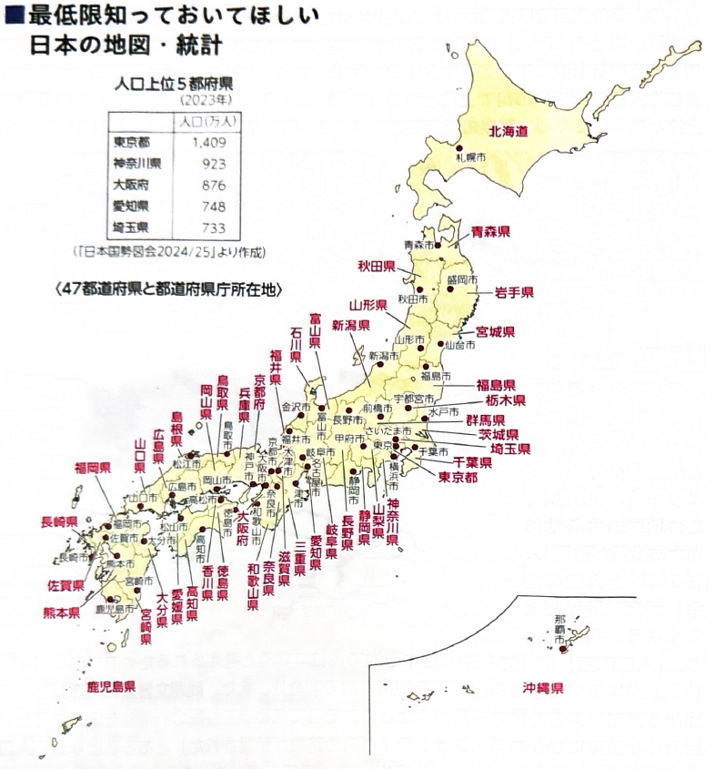
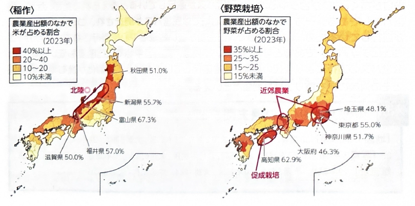
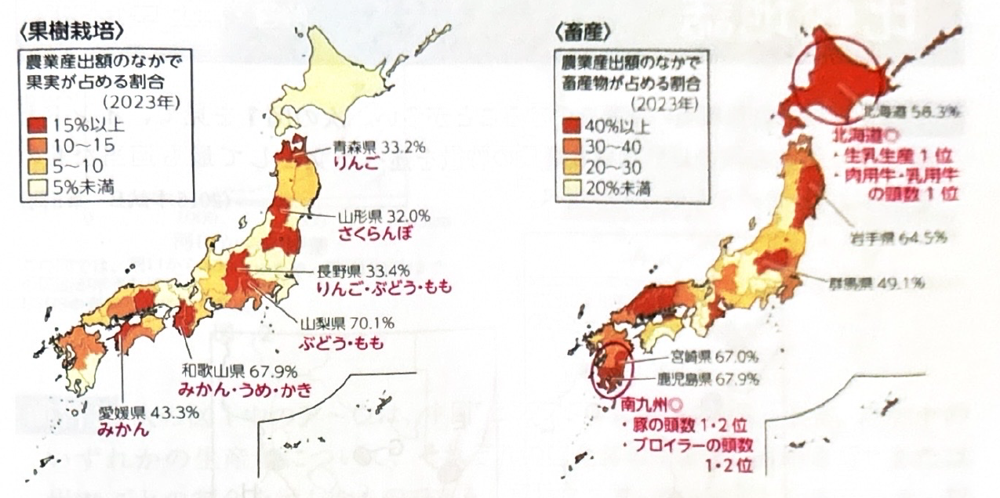
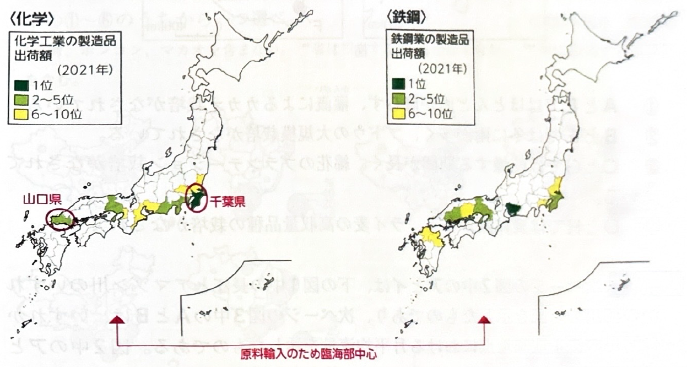
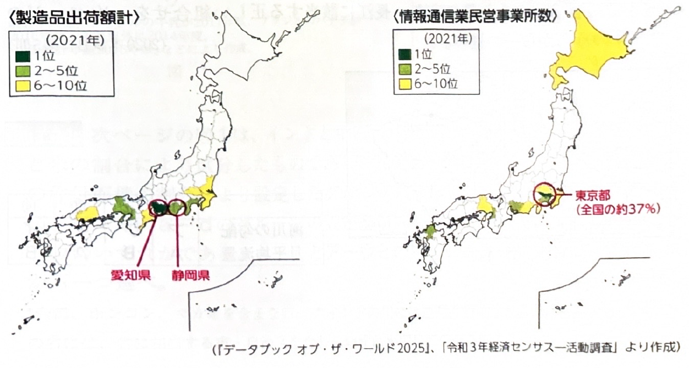

第10章 日本 - 日本の地図・統計
最低限知っておいてほしい日本の地図・統計
1. 人口上位の都府県（2023年）
日本の人口は、東京圏・名古屋圏・大阪圏の三大都市圏に集中しています。特に上位5都府県の順位と規模はしっかり押さえておきましょう。
| 順位 | 都府県名 | 人口 （万人） |
|---|---|---|
| 1位 | 東京都 | 1,409 |
| 2位 | 神奈川県 | 923 |
| 3位 | 大阪府 | 876 |
| 4位 | 愛知県 | 748 |
| 5位 | 埼玉県 | 733 |

2. 47都道府県と都道府県庁所在地
日本の地理の基本として、47都道府県の位置と名称は必須知識です。特に、都道府県名と県庁所在地名が異なるもの（全国で18道県）は、試験で非常によく狙われます。地図上の位置とあわせて正確に暗記しましょう。
| 地方 | 都道府県名 | 都道府県庁所在地（※名称が異なるもの） |
|---|---|---|
| 北海道・東北 | 北海道 | 札幌市 |
| 岩手県 | 盛岡市 | |
| 宮城県 | 仙台市 | |
| 関東 | 茨城県 | 水戸市 |
| 栃木県 | 宇都宮市 | |
| 群馬県 | 前橋市 | |
| 埼玉県 / 神奈川県 | さいたま市 / 横浜市 | |
| 中部 | 石川県 / 山梨県 | 金沢市 / 甲府市 |
| 愛知県 | 名古屋市 | |
| 近畿 | 三重県 / 滋賀県 | 津市 / 大津市 |
| 兵庫県 | 神戸市 | |
| 中国・四国 | 島根県 | 松江市 |
| 香川県 / 愛媛県 | 高松市 / 松山市 | |
| 九州・沖縄 | 沖縄県 | 那覇市 |




基礎問題（理解度チェック）
Q1. 日本の人口上位都府県について、空欄を埋めなさい。
2023年時点の日本の人口上位5都府県について、第1位は
であり、第2位は
、第3位は
である。さらに第4位には
、第5位には
が続いている。これらの都府県はいずれも人口が700万人を超えている。
Q2. 東日本において県名と県庁所在地名が異なる県について、空欄を埋めなさい。
北海道の道庁所在地は
である。東北地方では、岩手県の県庁所在地が
、宮城県が
である。関東地方では、茨城県が
、栃木県が
、群馬県が
である。
Q3. 西日本において県名と県庁所在地名が異なる県について、空欄を埋めなさい。
中部地方では、石川県の県庁所在地が
、愛知県が
である。近畿地方では、兵庫県が
である。中国・四国地方では、島根県が
、香川県が
、愛媛県が
である。
Q4. 日本の総人口のうち、上位5つの都府県（東京都・神奈川県・大阪府・愛知県・埼玉県）の人口をすべて合計すると、約4,600万人となり、日本全体の人口の約3分の1以上がこの5都府県に集中していることになる。
Q5. 47都道府県の中で、県名と県庁所在地名が異なるものは一つもないため、すべての県において「〇〇県の県庁所在地は〇〇市である」という法則が成り立つ。